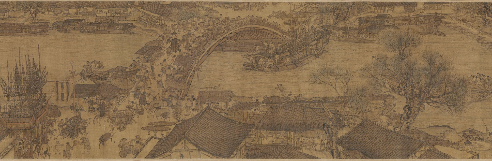
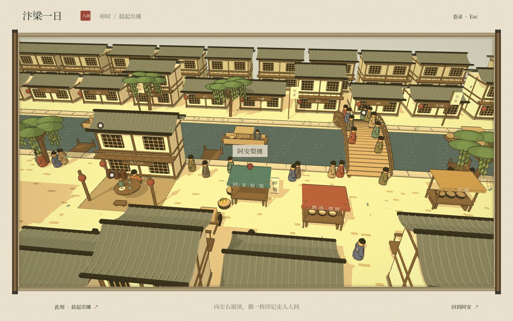
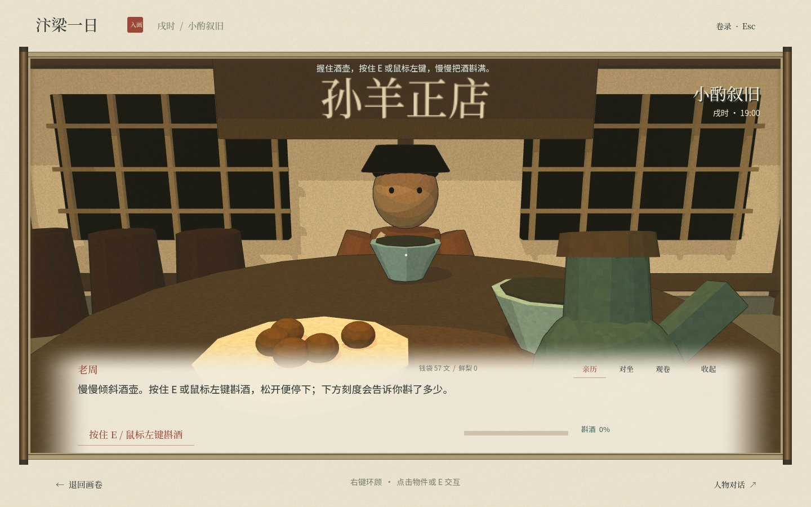
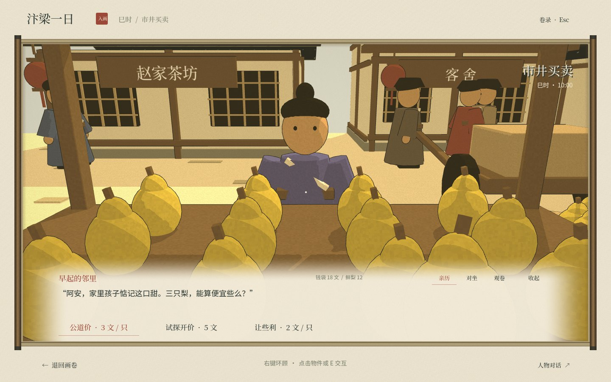

可供性
梨可拿、篮可放。靠近时局部高亮，避免满屏提示。

从一卷可展读的画，到一段可以亲手参与的生活。
以卖梨人“阿安”为线索，
把空间探索连成一段生活。
选择一两个角色，做深他们的动作、选择与关系。

拿起竹篮，摆出十二只鲜梨。用第一个简单动作，建立“我就在摊前”的感觉。
设计重点：可发现性与动作学习
在摊前拿梨，在桌边斟酒。身体位置、视线和物件操作保持一致。
VR 计划：头部自由追踪，手柄映射双手，建立身体归属。
6DoF 使探身、转头、伸手成为输入；不只移动屏幕上的光标。
手是否够到梨？注口是否对准杯？两只杯子是否接触？
头部保持追踪，场景位置决定“我在谁的身边”。
梨可拿、篮可放。靠近时局部高亮，避免满屏提示。
吸附到合法区域；放错位置可重拿，阻止穿透和重复计数。
手势变化、落物声、轻振动与库存变化，确认同一个结果。
三个条件同时成立才流出；抬正或松手立即停止。达到八分，给出完成反馈。
当前桌面 Demo拿起酒壶 → 按住 E / 左键持续斟酒
后续 VR 实现握持状态 + 酒壶姿态 + 杯口命中
→ 连续流量 → 酒量与触觉反馈

价签、杯中酒量与放置区，随世界存在。
对白、目光和距离，让信息属于说话的人。
腕上手卷容纳账本与退出，避免持续挡住视线。
抓取 · 放置 · 出价 · 斟酒 · 碰杯
DayState：库存、钱袋、人情、章节
World：物件、人物、地点与反馈
第三人称在 VR 中变为可俯视的微缩街市，头部仍可自由转动。
用淡转重定位 XROrigin，保持实际头部追踪；允许随时回到沙盘。
首版采用传送与定点体验。船上先做静止划桨练习，再评估行船和转向。
真实高清画心
横向长卷与地点交互
三种角色视点
七段日常与经济选择
拿取、斟酒、碰杯
三渲二与环境动效
6DoF 头手追踪
双眼立体与控制器
近手抓取、触觉反馈
头显性能与舒适性测试
选定设备与运行时，启用 OpenXR；搭建 XR Rig、米制场景、复位与退出。
抽离交互命令；实现近手抓梨、篮筐吸附、放置确认与库存联动。
加入阿安 / 朋友角色位、淡转重定位、空间对白，再扩展斟酒与碰杯。
做头显可用性试测，检查遮挡、误触和位移不适；优化渲染与反馈。
| 研究问题 | 怎么比较 | 观察什么 |
|---|---|---|
| 动作容易学吗？ | 键鼠拿放 vs. 控制器拿放 | 首次完成时间、任务成功、误抓与误放 |
| 角色切换清楚吗？ | 亲历完成任务 → 对坐再体验 | 能否说清“我是谁”、人物关系与情绪回忆 |
| 体验舒服吗？ | 定点交互 → 沙盘 → 短距离位移 | 中途退出、不适前后自评、场景停留行为 |
拟以 8–12 人做首轮可用性试测，记录操作与访谈；交换体验顺序，减少先后学习的影响。
这是探索性的设计验证。根据误触、理解与不适反馈调整交互，再决定是否扩大样本与场景。
空间定位 · 具身行动 · 角色共情
下一步：在 VR 中亲手支起第一筐梨。XR API 与渲染方式需在选定引擎版本、运行时和头显上实测；本提案以控制器 VR 为首个目标。
延续画卷的线条与色调，统一场景、物件和人物，具体表现仍需头显测试。
追踪身体姿态，计算可达距离与物件关系，再把动作映射为有意义的生活行为。
先验证一个完整具身闭环，再增加角色、场景和高运动风险的行船体验。